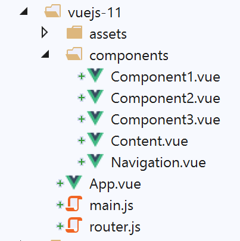

13. Project [vuejs-11]: Routing and navigation
Routing is what allows the user to navigate between the different pages of the application.
The project directory structure is as follows:

13.1. Installing dependencies
Routing in [Vue.js] requires the dependency [vue-router]:

- In [1-3], the dependency [vue-router] is installed;
- in [4-6], after installing the dependency, the file [package.json] was modified;
13.2. The [router.js] routing script
The application’s navigation rules are written to the [router.js] file (the script name can be anything):
// imports required for routing
import Vue from 'vue'
import VueRouter from 'vue-router'
// routing plugin
Vue.use(VueRouter)
// routing target components
import Component1 from './components/Component1.vue'
import Component2 from './components/Component2.vue'
import Component3 from './components/Component3.vue'
// application routes
const routes = [
// home
{ path: '/', name: 'home', component: Component1 },
// Component1
{
path: '/vue1', name: 'vue1', component: Component1
},
{
// Component2
path: '/vue2', name: 'vue2', component: Component2
},
// Component3
{
path: '/vue3', name: 'vue3', component: Component3
},
]
// the router
const router = new VueRouter({
routes,
mode: 'history',
})
// router export
export default router
Comments
- The [router.js] script will define the routing rules for our application;
- Lines 1–6: Activation of the [vue-router] plugin is required for routing. This activation requires importing the [Vue] class/function (line 2) and the routing plugin (line 3). This plugin was installed with the [router] dependency that we just installed;
- lines 8–11: import of the routing target views;
- lines 15–21: definition of the route table. Each element in this table is an object with the following properties:
- [path]: the view’s URL, the one we want to see displayed in the browser’s [URL] field. You are free to enter whatever you want;
- [name]: the route name. Here, too, you can enter whatever you want;
- [component]: the component that displays the view. This must be an existing component;
So here we will have four routes named [/, /vue1, /vue2, /vue3].
- lines 33–36: the router is an instance of the [VueRouter] class imported on line 3. The [VueRouter] constructor is used here with two parameters:
- the application’s routes;
- a mode for writing the URL in the browser: the default mode [hash] writes the URL in the form [localhost:8080/#/vue1] (# is the hash). The [history] mode removes the # [localhost:8080/vue1];
- line 39: the router is exported;
13.3. The main script [main.js]
The main script [main.js] is as follows:
// imports
import Vue from 'vue'
import App from './App.vue'
// plugins
import BootstrapVue from 'bootstrap-vue'
Vue.use(BootstrapVue);
// bootstrap
import 'bootstrap/dist/css/bootstrap.css'
import 'bootstrap-vue/dist/bootstrap-vue.css'
// router
import monRouteur from './router'
// configuration
Vue.config.productionTip = false
// instantiation project [App]
new Vue({
name: "app",
// main view
render: h => h(App),
// router
router: monRouteur,
}).$mount('#app')
Comments
- line 14: we import the router exported by the script [router.js];
- line 25: this router is passed as a parameter to the constructor of the [Vue] class, which will display the main view [App], associated with the [router] property of the view;
13.4. The main view [App]
The code for the main view is as follows:
<template>
<div class="container">
<b-card>
<!-- a message -->
<b-alert show variant="success" align="center">
<h4>[vuejs-11] : routage et navigation</h4>
</b-alert>
<!-- the current routing view -->
<router-view />
</b-card>
</div>
</template>
<script>
export default {
name: "app"
};
</script>
Comments
- line 9: displays the current view of the router. The <router-view> tag is only recognized if the view’s [router] property has been initialized;
13.5. View Layout
View layout is handled by the following [Layout] component:
<template>
<!-- line -->
<div>
<b-row>
<!-- three-column zone -->
<b-col cols="2" v-if="left">
<slot name="left" />
</b-col>
<!-- nine-column zone -->
<b-col cols="10" v-if="right">
<slot name="right" />
</b-col>
</b-row>
</div>
</template>
<script>
export default {
// settings
props: {
left: {
type: Boolean
},
right: {
type: Boolean
}
}
};
</script>
We have already used and explained this layout in the [vuejs-06] project in section [vuejs-06].
13.6. The navigation component
The [Navigation] component provides a menu from navigation to the user:

The component that generates the [1] block is as follows:
<template>
<!-- bootstrap menu with three options -->
<b-nav vertical>
<b-nav-item to="/vue1" exact exact-active-class="active">Vue 1</b-nav-item>
<b-nav-item to="/vue2" exact exact-active-class="active">Vue 2</b-nav-item>
<b-nav-item to="/vue3" exact exact-active-class="active">Vue 3</b-nav-item>
</b-nav>
</template>
- This code generates block 1 of three links enabling navigation;
- The [to] attribute of the <b-nav-item> tags must match one of the [path] properties of the routes in the application router;
13.7. The views
View #1 is as follows:

The [3-4] zones are generated by the following [Component1] component:
<template>
<Layout :left="true" :right="true">
<!-- navigation -->
<Navigation slot="left" />
<!-- message-->
<b-alert show variant="primary" slot="right">Vue 1</b-alert>
</Layout>
</template>
<script>
import Navigation from './Navigation';
import Layout from './Layout';
export default {
name: "component1",
// components used
components: {
Layout, Navigation
}
};
</script>
Comments
- line 2: view #1 uses the layout of the [Layout] component, which consists of two slots components named [left, right];
- line 4: the navigation menu is placed in the left slot. This is the [3] area shown above;
- line 6: a message is placed in the right slot. This is the [4] area shown above;
Views 2 and 3 are similar.
View #2 displayed by the [Component2] component:
<!-- view n° 2 -->
<template>
<Layout :left="true" :right="true">
<!-- navigation -->
<Navigation slot="left" />
<!-- message -->
<b-alert show variant="secondary" slot="right">Vue 2</b-alert>
</Layout>
</template>
<script>
import Navigation from './Navigation';
import Layout from './Layout';
export default {
name: "component2",
// view components
components: {
Layout, Navigation
}
};
</script>
View #3 displayed by component [Component3]:
<!-- view n° 3 -->
<template>
<Layout :left="true" :right="true">
<!-- navigation -->
<Navigation slot="left" />
<!-- message -->
<b-alert show variant="info" slot="right">Vue 3</b-alert>
</Layout>
</template>
<script>
import Navigation from "./Navigation";
import Layout from "./Layout";
export default {
name: "component3",
// view components
components: {
Layout,
Navigation
}
};
</script>
13.8. Running the project

When the project is executed, the following view is displayed:

- In [1], URL is [http://localhost:8080]. The following routing rule was then executed:
{ path: '/', name: 'home', component: Component1 }
Therefore, the [Component1] component was displayed. It displays view #1, [2]. Now let’s click on the [Vue 1] link, whose code is as follows:
<b-nav-item to="/vue1" exact exact-active-class="active">Vue 1</b-nav-item>
The display changes to the following:
- In [3], the following routing rule was executed:
path: '/vue1', name: 'vue1', component: Component1
So once again, the [Component1] component was displayed, and thus view #1, [4]. Now let’s click on the link [Vue 2], whose code is as follows:
<b-nav-item to="/vue2" exact exact-active-class="active">Vue 2</b-nav-item>
The new view is then as follows:

- In [5], the following routing rule was executed:
path: '/vue2', name: 'vue2', component: Component2
Therefore, the [Component2] component was displayed, and thus view #2. If we now click on the [Vue 3] link, whose code is as follows:
<b-nav-item to="/vue3" exact exact-active-class="active">Vue 3</b-nav-item>
We get the following new view:

- In [6], the following routing rule was executed:
path: '/vue3', name: 'vue3', component: Component3
Therefore, the [Component3] component was displayed, i.e., view #3 [8].